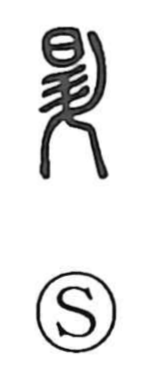

昇

Uncategorized
Kun: noboru | On: sho
to rise ・ to ascend
Explanation
Shirakawa sees 昇 as a phono-semantic graph built on 升, which provides the on reading sho. In earlier usage the counterpart character 陞 appears, where the left side depicts the sacred terrace 阜—the stepped “ladder” by which deities move between heaven and earth—set upon earthen shrine ground (土, the basis of 社). It thus pictures a ritual ascent to the holy place. In compounds such as shoko (“ascent and descent”), ancient texts often wrote the ascent element with 陞. From the Han period, 昇, formed with 日 “sun” and 升, is used especially for the rising of the sun, and later comes to be employed more generally in the sense of rising or ascending.